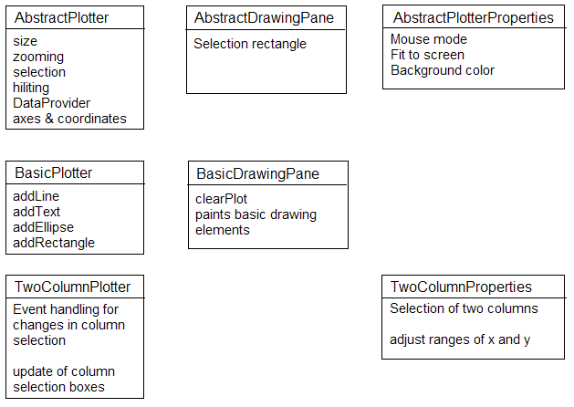

See: Description
| Interface | Description |
|---|---|
| DataProvider |
The plotters rely on a
DataProvider to get the data to
visualize. |
| Class | Description |
|---|---|
| AbstractDrawingPane |
Supports the selection of elements (also paints the selection rectangle) and
anti-aliasing, override
AbstractDrawingPane.paintContent(Graphics). |
| AbstractPlotter |
Provides functionality for zooming, moving and selection and is designed to
be extended.
|
| AbstractPlotterProperties |
The properties contains elements to interact with the view.
|
| Axis |
Implements a header for a scrollable area.
|
| LabelPaintUtil |
Util class providing methods for drawing labels, which can be rotated if the
available space is to small.
|
| Plotter2DScrollPane |
Overrides the default
JScrollPane to force the application of
the own Plotter2DScrollPaneLayout overriding the default
ScrollPaneLayout. |
| Plotter2DScrollPaneLayout |
ScrollPaneLyout for the plotter. |
| Plotter2DScrollPaneLayout.UIResource |
The UI resource version of
Plotter2DScrollPaneLayout. |
| PlotterMouseListener |
A mouse listener for the plotter mouse mode selection box.
|
| Enum | Description |
|---|---|
| LabelPaintUtil.Position |
Possible positions of the label.
|
Contains the basic viewing framework for KNIME. Its main elements are so-called plotters. A plotter consists of four elements:
There exists a hierarchy of plotters each adds some functionality. They may be extended at every point in the hierarchy.
The most abstract plotter is the AbstractPlotter
which provides functionality of
selection, zooming, moving and correctly resizing the component.
Although it is an abstract plotter X and Y axis may be set.
The next plotter in the hierarchy is the BasicPlotter
which provides functionality to plot basic drawing elements such as lines (polygons), ellipses
and rectangles. The plotter comes along with these basic elements but also let
you define your own BasicDrawingElement
and add it to the drawing pane.
The next sub branch of the basic plotter is the TwoColumnPlotter
which plots two selectable columns.
The following diagram roughly sketches the hierachy described so far with their
implementing components.

All plotters deeper down the hierarchy are special implementations, which can
also be extended, though. These are the BoxPlotter,
realizing a so-called box-and-whisker plot,
DendrogramPlotter,
which converts a hierachical cluster result into a dendrogram,
the LinePlotter, which draws the values
of each column as a line, the ParallelCoordinatesPlotter,
which draws the columns as parallel axes and connects the values of one row by a line,
the ScatterPlotter, painting the data values of two
selected columns as dots in 2-dimensional space,
and the ScatterMatrixPlotter, which displays
a matrix of 2-dimensional scatter plots for every column combination.
This subframework also provides a Node to easily add a plotter to the KNIME framework.
The DefaultVisualizationNodeView is constructed with
a NodeModel and a plotter. If only the incoming data is needed for the visualization,
the DefaultVisualizationNodeModel can be used.
It takes the incoming data, puts it in a DataArray and realizes the
loading and saving of the data. It also implements the DataProvider
interface on which the plotter relies to get the data to visualize. In cases where not
a DataArray is used to represent the data, the
DefaultVisualizationNode has to be extended or replaced by a more sophisticated implementation.
If the DefaultVisualizationNodeModel is used, only a
NodeFactory has to be defined, where the code might look like the following
example:
/**
* @see org.knime.core.node.NodeFactory#createNodeDialogPane()
*/
protected NodeDialogPane createNodeDialogPane() {
return new DefaultVisualizationNodeDialog();
}
/**
* @see org.knime.core.node.NodeFactory#createNodeModel()
*/
public NodeModel createNodeModel() {
return new DefaultVisualizationNodeModel();
}
/**
* @see org.knime.core.node.NodeFactory#createNodeView(int,
* org.knime.core.node.NodeModel)
*/
public NodeView createNodeView(final int viewIndex,
final NodeModel nodeModel) {
return new DefaultVisualizationNodeView(nodeModel, new LinePlotter());
}
For more information see also the detailed description.
KNIME GmbH, Konstanz, Germany
You may not modify, publish, transmit, transfer or sell, reproduce, create derivative works from, distribute, perform, display, or in any way exploit any of the content, in whole or in part, except as otherwise expressly permitted in writing by the copyright owner or as specified in the license file distributed with this product.